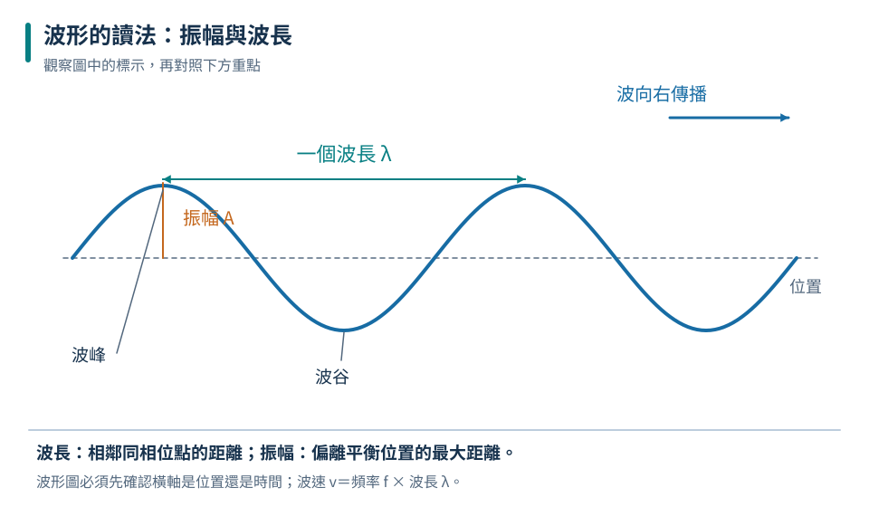
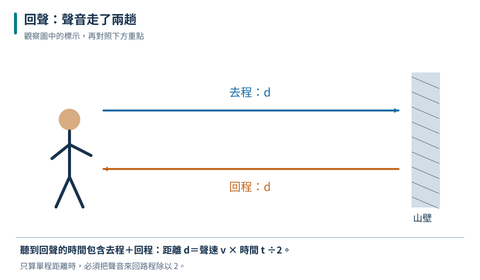
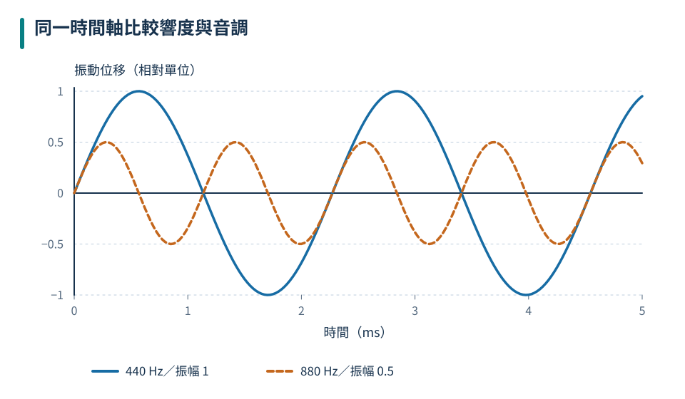

振幅 A
離開平衡位置的最大距離。振幅越大，波攜帶的能量通常越多。
八上理化共同核心
從繩子上的起伏看懂波如何傳遞能量，再把同一套觀念用到聲音。你會讀波形、算波速、用回聲測距，也能分清響度、音調與音色。
WAVE BASICS

先追蹤圖中的物體與箭頭，再用本節概念說明它們的關係。
波向前傳遞的是能量；介質中的各點只在平衡位置附近振動，並不跟著波一路前進。
離開平衡位置的最大距離。振幅越大，波攜帶的能量通常越多。
相鄰兩個同相位點的距離，例如波峰到下一個波峰。
每秒完整振動的次數，單位是赫茲（Hz）。
互動造波器
介質甲中波速 120 cm/s，頻率 3 Hz，所以波長為 40.0 cm。
在繩波中綁一小段色帶，色帶只會上下振動；往前傳的是擾動與能量。
WAVE TYPES
先追蹤圖中的物體與箭頭，再用本節概念說明它們的關係。
分類時比較「介質振動方向」和「波傳播方向」；兩者垂直是橫波，平行是縱波。
| 比較 | 橫波 | 縱波 |
|---|---|---|
| 介質振動方向 | 與傳播方向垂直 | 與傳播方向平行 |
| 波形特徵 | 波峰、波谷 | 密部、疏部 |
| 常見例子 | 繩波、電磁波 | 空氣中的聲波、彈簧疏密波 |
課堂圖常用上下起伏幫助理解橫波；真實水面粒子可能做近似圓形或橢圓運動，不能把整片水想成只上下移動。
SOUND
先追蹤圖中的物體與箭頭，再用本節概念說明它們的關係。
發聲體振動，使鄰近介質交替被壓縮、放鬆，形成疏密相間的縱波。沒有介質，就不能把聲音傳出去。
聲帶、鼓面、音叉或喇叭振膜來回振動。
空氣粒子在原處前後振動，把能量傳向遠處。
耳膜或麥克風跟著振動，接收到聲音訊息。
太空近似真空，缺少可傳遞聲波的介質。
注意看得到閃光，是因為光不需要介質也能傳播。
SPEED & ECHO

先追蹤圖中的物體與箭頭，再用本節概念說明它們的關係。
回聲測距實驗
以室溫空氣中聲速 340 m/s 計算。聲音必須先到山壁再返回，所以路程是距離的兩倍。
回聲往返路徑
題目給的回聲時間是「去＋回」的總時間。若算的是人到牆的單程距離，最後一定要除以 2。
SOUND QUALITIES

先追蹤圖中的物體與箭頭，再用本節概念說明它們的關係。
看振幅。振幅較大，通常聽起來較大聲；常用分貝 dB 描述。
看頻率。頻率越高，音調越高；與大不大聲是不同概念。
看波形。不同聲源即使音調、響度相近，仍可因音色不同而辨認。
聲音控制台
敲鼓更用力主要增加振幅，所以響度增大；鼓面的振動頻率不一定因此改變。
INSTRUMENTS
先追蹤圖中的物體與箭頭，再用本節概念說明它們的關係。
樂器改變振動部分的長度、鬆緊、粗細或大小，其實都是在改變振動頻率。
外來振動頻率接近物體的固有頻率時，物體振幅明顯增大。樂器的共鳴箱能讓聲音更容易傳到空氣中。
APPLICATIONS
先追蹤圖中的物體與箭頭，再用本節概念說明它們的關係。
聲納、倒車雷達利用聲波反射與往返時間求距離。
超音波成像、探傷與測厚利用反射訊號了解內部構造。
超聲波在液體中造成快速振動，可協助清除細小縫隙中的髒污。
保養機器、降低震動、使用消音器。
設隔音牆、吸音材料或增加距離。
關窗、戴耳罩，縮短暴露時間。
超聲波指頻率高於 20,000 Hz；在同一介質、相同條件下，聲速主要由介質性質決定。
INTERACTIVE LAB
先用圖像線索判斷。答錯時保留題目並提供提示，可以立刻再試一次。
挑戰一
根據敘述，找出對應的波動量。
選一個答案開始挑戰。
挑戰二
判斷情境主要對應哪一個聲音概念。
選一個答案開始挑戰。
REVIEW
波傳遞能量，不把介質整團帶走。v＝fλ，T＝1/f。
振動方向與傳播方向垂直為橫波，平行為縱波。
聲音由振動產生，需要介質；真空不能傳聲，回聲距離要除以 2。
振幅看響度、頻率看音調、波形看音色。
CHAPTER TEST
先獨立作答，再查看解析。答題紀錄只保存在這台裝置的瀏覽器中。